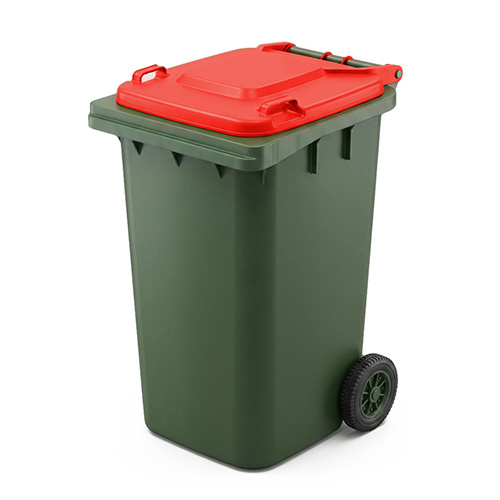
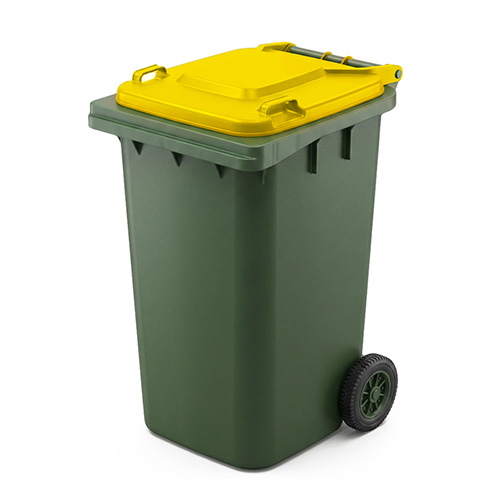
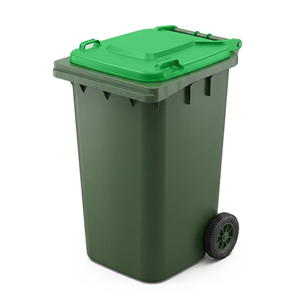

Household recycling



Red Bin
Household waste
The red bin is used for general household waste that cannot be recycled or composted. Items such as plastic wrappers, nappies, broken ceramics, food-contaminated packaging, and other non-recyclable materials should be placed in this bin. To help reduce landfill waste, always check whether an item can be reused, recycled, or composted before placing it in the red bin.
Yellow Bin
Recyclable materials
The yellow bin is for recyclable materials including paper, cardboard, plastic bottles and containers, aluminium cans, and glass bottles or jars. All items should be clean and empty before disposal to avoid contamination, which can prevent recycling. By correctly sorting recyclable materials into the yellow bin, valuable resources can be recovered and reused to create new products.
Green Bin
Organic garden and food waste
The green bin is designed for organic garden and food waste such as grass clippings, leaves, small branches, fruit and vegetable scraps, and other compostable materials. This waste is collected and processed into compost or mulch, helping to reduce landfill and support sustainable environmental practices. Avoid placing plastic bags, general rubbish, or recyclable packaging in the green bin.
Which bin to use?
- Plastic wrappers
- Chip packets
- Broken ceramics
- Broken glassware
- Nappies
- Baby wipes
- Sanitary products
- Tissues
- Cotton buds
- Toothbrushes
- Broken toys
- Styrofoam
- Polystyrene packaging
- Vacuum dust
- Pet waste
- Cat litter
- Food-soiled pizza boxes
- Plastic straws
- Plastic cutlery
- Broken mirrors
- Light globes
- Rubber gloves
- Disposable masks
- Cigarette butts
- Chewing gum
- Greasy paper
- Sticky tape
- Bubble wrap
- Broken hangers
- Foil-lined packets
- Used sponges
- Old shoes
- Broken phone cases
- Pens
- Markers
- Cracked mugs
- Broken plates
- Synthetic fabric scraps
- Plastic toothbrush packaging
- Laminated paper
- Wax paper
- Razor blades
- Broken umbrellas
- Dustpan waste
- Silicone baking mats
- Old makeup wipes
- Disposable gloves
- Plastic film
- Broken CDs
- Tape dispensers
- Newspapers
- Magazines
- Office paper
- Cardboard boxes
- Cereal boxes
- Egg cartons
- Paper bags
- Mail envelopes
- Toilet roll cores
- Pizza boxes (clean)
- Aluminium cans
- Soft drink cans
- Steel food cans
- Empty aerosol cans
- Glass bottles
- Glass jars
- Plastic milk bottles
- Water bottles
- Soft drink bottles
- Juice bottles
- Shampoo bottles
- Conditioner bottles
- Detergent bottles
- Cleaning spray bottles
- Yoghurt containers
- Ice cream tubs
- Takeaway containers (clean)
- Plastic trays
- Tin lids
- Aluminium foil (clean)
- Biscuit trays
- Fruit punnets
- Plastic jars
- Coffee tins
- Soup cans
- Pet food cans
- Laundry powder boxes
- Shoe boxes
- Wrapping paper (non-foil)
- Brochure paper
- Catalogues
- Notebook paper
- Paper packaging sleeves
- Plastic juice containers
- Dishwashing liquid bottles
- Body wash bottles
- Glass sauce jars
- Plastic food tubs
- Baking paper boxes
- Cardboard drink cartons
- Grass clippings
- Dry leaves
- Fresh leaves
- Small branches
- Twigs
- Weeds
- Dead flowers
- Pruned hedge trimmings
- Plant cuttings
- Garden clippings
- Fruit peels
- Vegetable scraps
- Apple cores
- Banana peels
- Orange peels
- Potato peelings
- Onion skins
- Lettuce leaves
- Herb stems
- Tea leaves
- Tea bags
- Coffee grounds
- Paper napkins
- Paper towels
- Eggshells
- Bread crusts
- Rice leftovers
- Pasta scraps
- Spoiled fruit
- Spoiled vegetables
- Flower petals
- Grass seed heads
- Palm fronds
- Wood shavings
- Sawdust
- Untreated timber offcuts
- Compostable food scraps
- Avocado skins
- Mango skins
- Pumpkin scraps
- Corn husks
- Cucumber ends
- Tomato stems
- Celery tops
- Carrot tops
- Pea pods
- Bean trimmings
- Wilted herbs
- Dead indoor plants
- Garden mulch